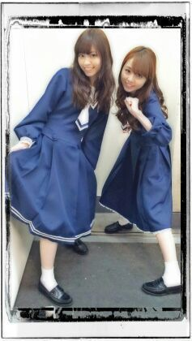

はあ〜い ♪)))
皆さん今日も１日お疲れ様です ^^
Rotty☆だぉお .
今日は 京都にて全国握手会でした！
ななせと同じレーンで握手会/
ミニライヴ/
6枚目選抜発表/
今日も皆さん本当にありがとう
ございました(〃∨〃)
握手会では びっくりする位
たくさんの方が並んでくださり
楽しい方ばかりで...
関西弁があっちやこっちから
聞こえてきて...
ろってぃ−は
なんだかすっごく幸せでしたん♪
皆のことやっぱ好き...
ミニライヴでは
君の名は希望
13日の金曜日
ロマンティックいか焼き
シャキイズム
君の名は希望(ピアノversion)
に加え
〜乃木坂の詩〜を歌いました。
６枚目の選抜メンバーは
私達はすでに分かっていたけど
やっぱり色んな気持ちが
込み上げてきて
涙をこらえることはできなかった.
だから 乃木坂の詩を歌っている時は
涙が邪魔をして ぼやけてたお♪
選抜発表は明日乃木どこで
放送されるので
放送されてから
また自分の気持ちをblogに
書きたいと思います.
ぴょん ♪
最近 毎週の様に握手会があって
元気をもらっています...
ありがとう(〃∨〃)
今は メンバー全員で
晩御飯を食べにきています。
ちょーーーぅ 和食です //
タケノコいっぱい〜
ななせ♪も今日は
ありがとうねん(^^)
とりゃん♪

明日は京都個別握手会
よろしくねん♪
以上っ ろってぃ−でした のし♪